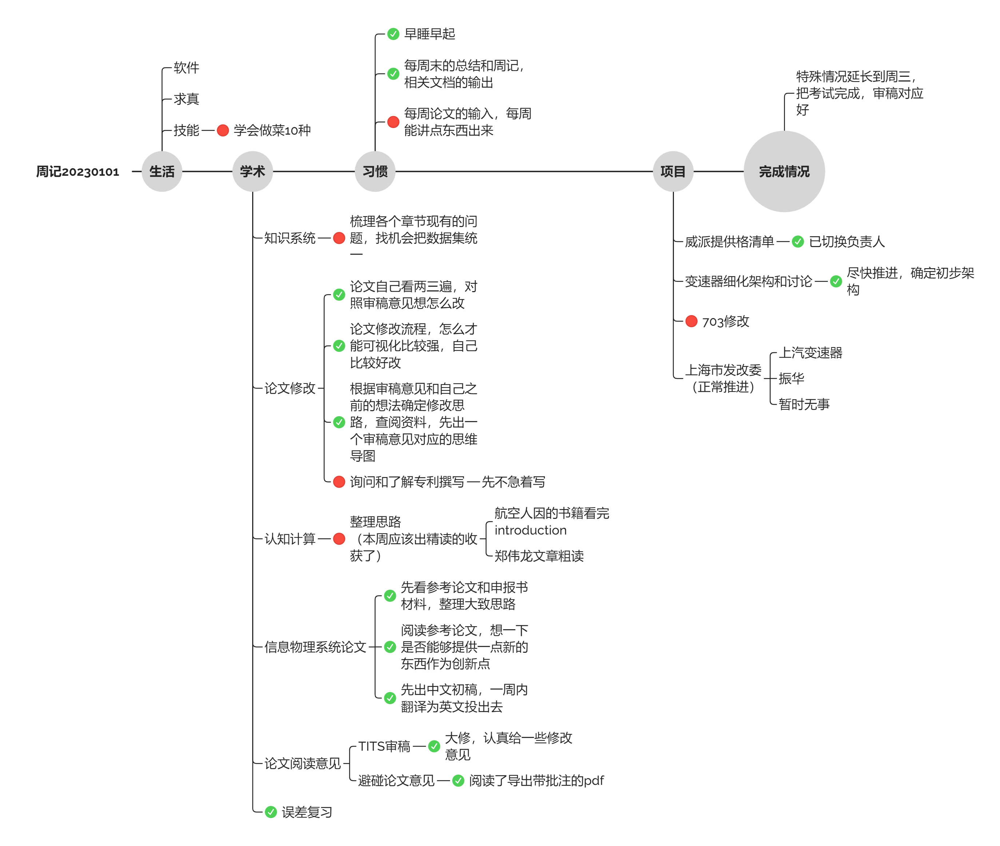

总结
注：这一版本的周记不做公开，公开版本只写几个图。
计划总结

本周规划了大约10天，但是还是有很多事情没做完，原因是后面几天都有点摆烂，这周发生了点事情，后面几天没心思学习
总结：每周的论文阅读和总结仍然没有完成，以及知识系统的代码还没开始写。
信息物理系统论文写了个大致的思路，但是距离预想还是差挺多的（预期是给一个初稿）
论文修改也没有完全按照规划完成，预期应该是全都知道怎么修改。
误差复习时间比预想更久
下周规划：这周规划内容太多，且有突发事件，后续应该找回状态，不谈弥补，至少按计划行事。
数据总结
Vscode
这周没有编写代码

Zotero
这周其实看论文不少，但是基本都是粗读，没有仔细看过论文，这是一直以来的问题。所以才会想要每周精读一点论文，但是目前还没走上正轨，这周一定要坚持了。

整体软件报表
没想到这周微信登顶了，浏览器大部分时间应该在查资料，后面ppt，obsidian、zotero看起来还可以。但是总感觉有效学习时间应该不如上周。

习惯总结
- 早睡早起：睡得晚也起得晚，这周开始保证11点上床，七点半起床了。
- 周记总结：Done
- 论文精读：这周没有完成
其他习惯待定
下周基础规划
- 这周的学术计划（TICPS论文撰写、论文修改和论文精读）继续往前推，保持基础进度
- 这周多学一点做菜，如果学业上推不动就生活上多推一下
- 了解一下穿搭和皮肤保养，现在可以看一点闲时视频了，没事的时候看视频也要有针对性
收获
生活收获
这周看了很多小说以及漫画的解说，这个感觉和看小说差不多，一开始看就很难停下来，这段时间因为这个也变得摆烂了许多，之后要做好平衡
除此之外这周没有其他值得称道的事情，感觉基本没做啥这周就过去了。
想法
因为课程成绩录入的事情，这周有几天变得心思不定没法学习，这周尽快把这件事情办好，之后也要从中学习，不要再犯类似的错误了。